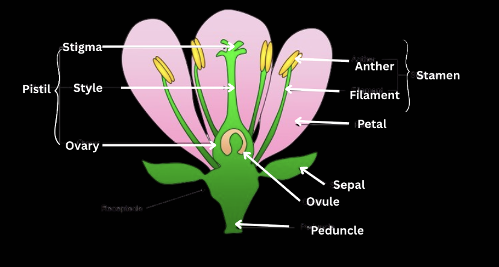

In 1908, British Mathematician G.H. Hardy and German Physician W. Weinburg, independently showed that, in a population that is not evolving, allele and genotype frequencies will remain constant from generation to generation. This is now considered as a key concept in population genetics and referred to as Hardy-Weinburg Equilibrium Principle.
Let's use a simple example to explain this Equilibrium.
Take flowers of a plant, let's consider the colour of the flower for this example. The dominant allele for Red Flower is 'R' and recessive allele 'r' results in White Flowers. When we draw a Punnett square for cross between Rr x Rr plants We obtain a ratio like this between all the phenotypes
Let's look at the equations of Hardy-Weinburg Equilibrium
p+q=1 p2+2pq+q2=1
So, let's assign R as p and r as q, as you can imagine p x p = p2 so R x R = RR, So p2 is RR and the same goes for q2. Let's substitute R and r to 2pq, 2 x R x r = 2Rr. Let's put in the values of ratios from the phenotypic ratio we found,
p2+2pq+q2=1 RR+2Rr+rr=1 0.25+0.5+0.25=1 if p2is equal to 0.25 then p is equal to 0.25 which is 0.5, also if q2is 0.25 then q is also equal to 0.25 which is also 0.5 This also satisfies p+q=1 since 0.5+0.5=1
Now, Let's work with Incomplete Dominance,
Say a plant has Red, Pink, White flowers with alleles CRCR, CRCW, CWCW respectively. We cross breed 500 plants to obtain a phenotypic ratio between all the phenotypes. Let's say there are 700 CR alleles. Let's find the number of CW alleles.
So, p+q=1 Let's assign CRto p and CWto q CR+CW=1 since7001000alleles is CRthen p is equal to 0.7, and 1-0.7=0.3, q=0.3
Now let's find how many pink flowers there is in the first generation,
since p=0.7 and q=0.3. Let'substitute them in the 2nd equation p2+2pq+q2=1 0.72+2 x0.7x0.3+0.32=1 0.49+0.42+0.9=1 so 0.49x1000=490 plants have red flowers, 0.42x1000=420 plants have pink flowers, 0.09x1000=90 plants have white flowers.
This is how we find the number of plants with the specific genotype using Hardy-Weinburg Equations.
Now you may ask whether these equilibrium principles can be applied universally. The answer is no. This equilibrium only applies when certain conditions are met. Let's discuss them.
Evolution can be explained in terms of changes in allele (gene) frequencies over generations. >Genetic variation within the population is the key to evolution. Mutation will create new alleles, and migration will include it into the population to increase variation. Natural selection will then choose the better adapted individuals based on their phenotype variations, causing the population to evolve. As a result, after the evolution, the population is at a higher adaptive level compared to the level of adaptation they showed before being evolved.
This concept can be illustrated with the evolution of the peppered moth in England during the time of industrialisation. The moth had two phenotypic varieties based on their colour: dark and light. Prior to the industrialisation of central England, the light-coloured allele was the most prevalent because the light-coloured moths can hide in lichen-covered barks of the plants to escape predation. But after industrialisation pollutants got released from factories and they killed lichens growing on trees and darkened barks with soot. Now, the dark coloured moths have the advantage because they can camouflage themselves in the darkened barks to escape predators, but the light-coloured ones were contrasting against the dark barks got easily spotted and died. This led to the dark coloured allele becoming predominant, which means evolution led to a change in the frequencies of alleles so, dark coloured moths' population went up and light-coloured moth's population went down.
Written by Jathurshan Myuran